Coding ML algorithms in Octave
07/2021
As part of a Machine Learning course by Andrew Ng on Coursera, I was tasked to implement various ML algorithms in Octave. In this article, I will go over the ones that I have implemented and give an overview of the mathematics behind them. Note that these slides are from Andrew Ng's Machine Learning course. I hope you have as much fun as I did learning about the maths behind commonly used ML algorithms.
Regularised, Multivariate Linear Regression
Linear regression is a commonly used supervised learning algorithm used to predict a real-valued output; for example, house prices or temperatures. In linear regression, our hypothesis function is shown below. The beta values are the weightings for each feature in the dataset and the x's represent the features. A feature is a quality that we believe will impact the output and by including it in our hypothesis function, we can account for it, e.g., for house prices, we could have the square feet, number of bedrooms, number of toilets, and more. Our goal is to find the optimal values of beta that give us the most accurate output.Image 1: Hypothesis function for linear regression.
A cost function tells us how far off our prediction is from the actual value. By creating a cost function, we can try to minimise it, in other words minimise our error, to find the values of beta that give us the predictions with lowest average error. The algorithm that I use to minimise the cost function is gradient descent. Gradient descent works by going in the opposite direction to the gradient; consequently, the cost decreases since we are heading towards the local minimum. The alpha term is the learning rate which is generally within the range [0.001, 3]. The learning rate tells us the step size in the opposite direction of the gradient. If alpha is too large, we may never converge; on the other hand, if alpha is too low, it will take too long to converge to local minima.
Image 2: Gradient descent algorithm.
Image 3: Cost function for linear regression.
The regularised implementation of linear regression uses Lagrange multipliers to keep the optimal values of beta low. Gradient descent works in the same way as unregularised regression , however, there is an extra term for Thetas 1 to N, excluding Theta(0).
Image 4: Gradient descent for regularised linear regression.
Regularised, Multivariate Logistic Regression
The main difference between logistic and linear regression is that logistic is used to predict classes or discrete values rather than real-valued; for example, what digit a handwritten digit is. The sigmoid/logistic function is a function within the range [0, 1]. By passing the output of linear regression into the sigmoid function, we obtain a value between [0, 1]. This value is equal to HTheta(x) (our hypothesis function).
Image 5: Sigmoid function.
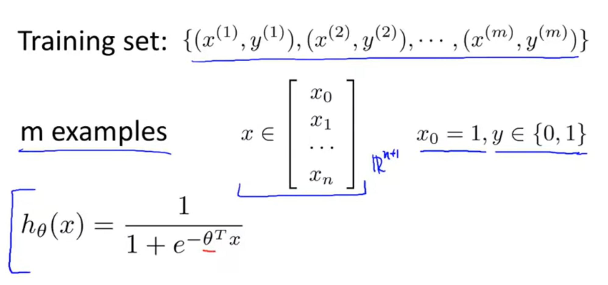Image 6: Hypothesis function for logistic regression.
Image 7: Cost function for logistic regression showing why we have -log(HTheta(x)).
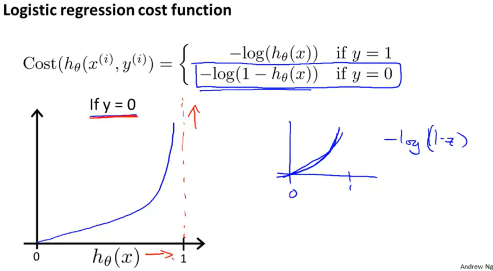Image 8: Cost function for logistic regression showing why we have -log(1 - HTheta(X)).
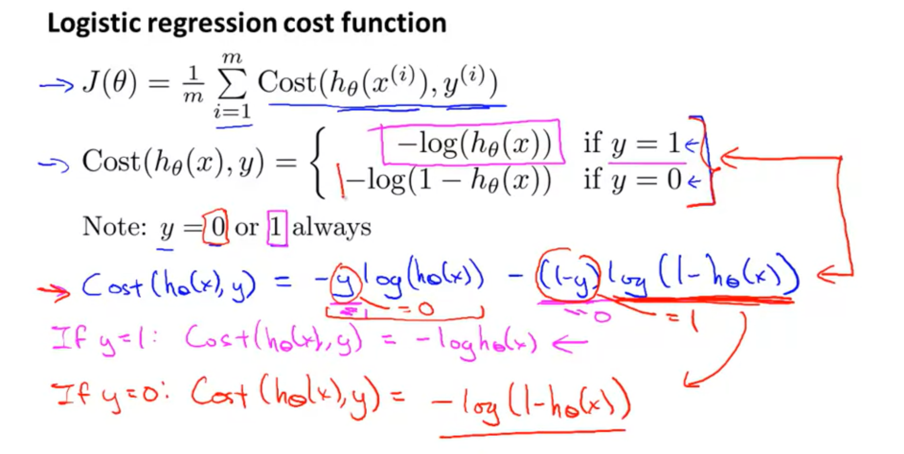Image 9: Overall cost function for logistic regression.
The regularised cost function for logistic regression works in the same way as linear regression, we simply add a new term for each Theta that is multiplied by our Lagrange multipler / 2 x number of training examples. If we have two classes, then if the output probability is > 0.5 then it indicates that the output is class 1, otherwise it is class 0.
Image 8: Cost function for regularised logistic regression.
Regularised logistic regression leverages Lagrange multipliers the same way that linear regression does to keep the optimal values of beta small.
Multiclass logistic regression uses the one-for-all method to choose a class. For each class, we create a model. Then we calculate the probability of the output being that class vs being one of the other ones. This is repeated for all classes and the highest probability one is output. An example will help demonstrate this. Imagine we are training a digit classifier. We would first create 10 different models. The first model would check the probability of the digit being 0 or not 0. The second one would do 1 or not 1 and so on. The model which gives the highest probability is the digit we output.
Perceptron
The perceptron algorithm is an example of a neural network. It is modelled on the human brain and consists of layers of neurons (models) who feed their output into each of the neurons in the next layer. Each neuron can be considered a ML model. A simple binary classification model using logistic regresssion can be viewed as a neural network with only 1 neuron and layer. The cost function for perceptron is a generalised version of the cost function for logistic regression. There is an extra summation term because the neural network has k output units and we need to sum over all k. L stands for the number of layers. HTheta(x) is the same as seen in image 6.
Image 9: Cost function for regularised perceptron.
We minimise the cost function using an algorithm known as backpropagation. Firstly, we execute forward propagation. The a(n) represents the nth layer in the neural network while Theta(n) represents the weights for the nth layer of the neural network. g(f(x)) means that the function f(x) is passed into the sigmoid function g(z). We want to calculate a(n) for all layers.
Image 10: Forward propagation algorithm.
Capital delta is an accumlator which can be used to compute the derivative of the cost function with respect to Theta((i,j)), the weight for the ith training value and jth feature. Lower case delta(L) is a j dimensional vector that contains the error for layer L in the neural network. We used forward propagation to calculate the values of a(n) for each layer. Then we initialise an accumlator and propagate a backwards with capital delta accumulating all of the errors. One we have accumulated all of the errors, we can quickly find the gradient of any node in the network go in the opposite direction so that the error is being minimised.
Image 11: Backpropagation algorithm
Principal Component Analysis (PCA)
Principal Component Analysis or PCA are the most widely used dimensionality reduction technique. What does this mean? Say you have a dataset with a large amount of features, maybe 10000. Obviously this can be quite difficult and time consuming to work with; however, by applying PCA to our dataset, we can significantly reduce the number of features/dimensions. Another benefit of using PCA is that by reducing the number of features to 2/3, we can visualise our dataset. What PCA does is that it finds a vector, u, that it can project data points onto to minimize the projection error. What is the projection error? Well, the projection error is the distance from a data point to the same data point projected onto the vector u. If you view image 12, you can see that the red line is a better choice than the magneta line because the average projection error (blue lines from data points) is much lower.
Image 12: The blue lines indicate the projection error. As you can see, the red line is a better vector to project onto.
In the more general case where we want to reduce the dataset from n dimensions to k, we need to find a k vectors, u1, u2 ... uk, onto which to project the data. In other words, we are projecting our data points onto the space spanned by the vectors ui. Now I will talk about the PCA algorithm. Before we can start, it is important to note that PCA works best when the features have been scaled so that they are all within a similar range. Once the features are scaled, we compute the covariance matrix and the eigenvectors. I won't talk about the method we use to compute both of those, but once we have them we simply take the first k column vectors and compute uTxi.
Image 13: Outline of the PCA algorithm. This part shows us how to get our matrix of column vectors.
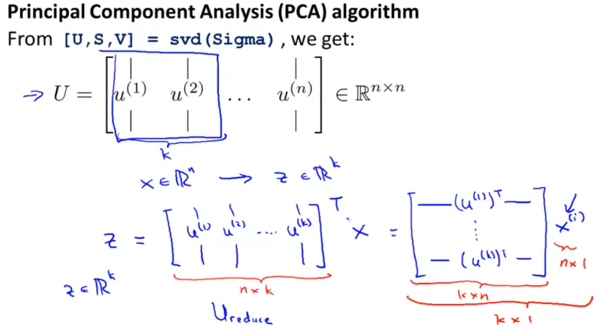Image 14: Outline of the PCA algorithm. This shows us how to obtain the projected vector, z, from our column vectors and n-dimensional data point.
Support Vector Machines (SVM)
Support vector machines (SVM) are a model used in machine learning that work by finding a maximum distance/margin decision boundary that divides the dataset into different classes. For example, in image 12, the SVM would select the black decision boundary rather than the magneta or green boundary because the black boundary has the largest margin between data points in each class. The cost function for an SVM is similar to the cost function for logistic regression except that it puts the cost as 0 if the classifier predicts correctly, e.g., if y = 1 and ΘTx >= 1 or y = 0 and ΘTx <= -1
Image 15: SVM selects the largest margin decision boundary which is the black one.
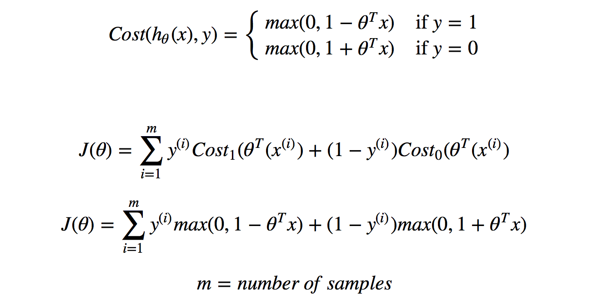Image 16: SVM cost function.
For non-linear decision boundaries, one method is to create polynomial features from existing features; however, this method is computationally expensive and it is difficult to know which features will be good. A better solution would be to use a kernel. Firstly, we initialise various landmarks, l1, l2, l3, and compute a similarity score between xi's and each of the landmarks. The similarity function used to compute the score is called the kernel. What happens is that each of the landmarks define a new feature.
Image 17: SVM with gaussian kernel.
In practice, we want to initialise each of our data points as its own landmark. Then for each xi we will compute a feature vector that contains the similariry score with all other landmarks. Once you have the feature vector, simply multiply it with ΘT vector which gives you Θ0f0 + Θ1f1 + ... + Θmfm. If this is > 0, we output y = 1. Now the question is, how do we find the values for our weights, Θ? Similar to regression, we will run gradient descent on our cost function to find the optimal values of Θ.
Image 18: Computing feature vector for each data point, xi
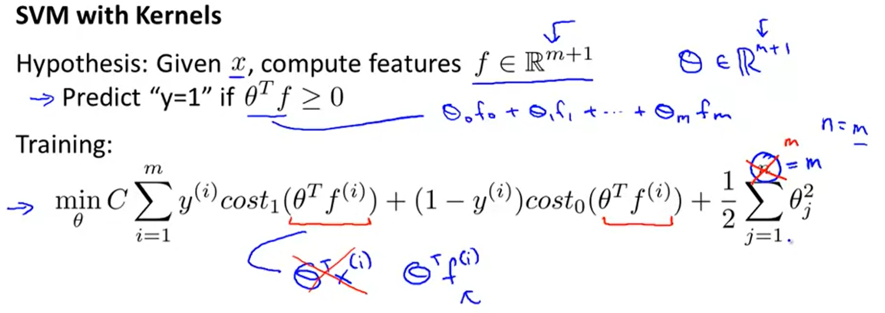Image 19: How to use feature and Θ vectors to predict a class, and the cost function for SVM.
K-Means Clustering
In a clustering algorithm, we would like to take an unlabelled dataset and use the algorithm to group it into coherent subsets. K-Means is one of the most commonly used clustering algorithms. Just a note before we begin, K Nearest Neighbours (KNN) is not the same as K-Means since KNN is used with labelled data to perform classification while K-Means is used to generate clusters from unlabelled data. K-Means is an iterative algorithm that consists of an outer loop and an inner loop. Firstly, we initialise k random cluster centroids (k = number of clusters). Then we loop through each data point and assign it to the closest cluster centroid. Once each data point is assigned to a cluster, we compute the average of all of the points in each cluster and move the respective centroid to that mean. This process of assigning clusters and moving the centroids to the new mean is repeated until the mean stops changing.
Image 20: Randomly initialising two cluster centroids.
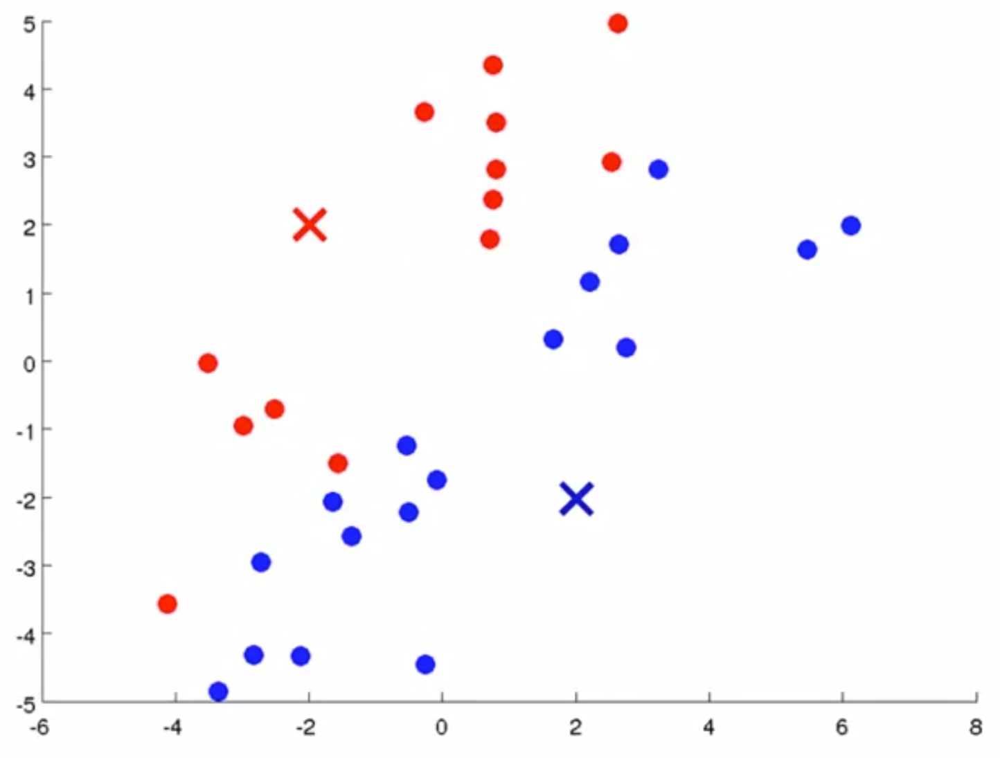Image 21: Assigning each data point to a cluster.
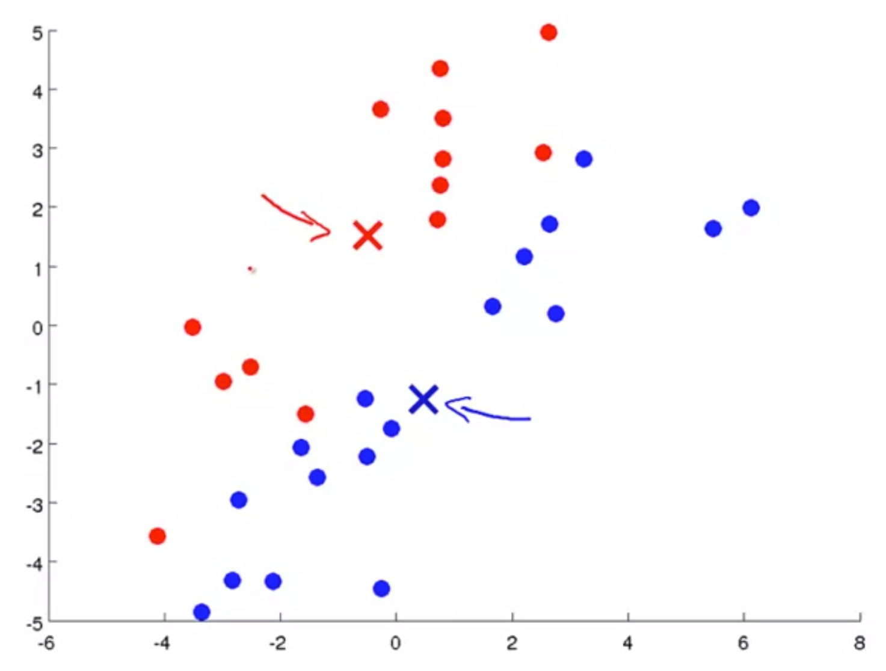Image 22: Move each centroid to the mean of the cluster.
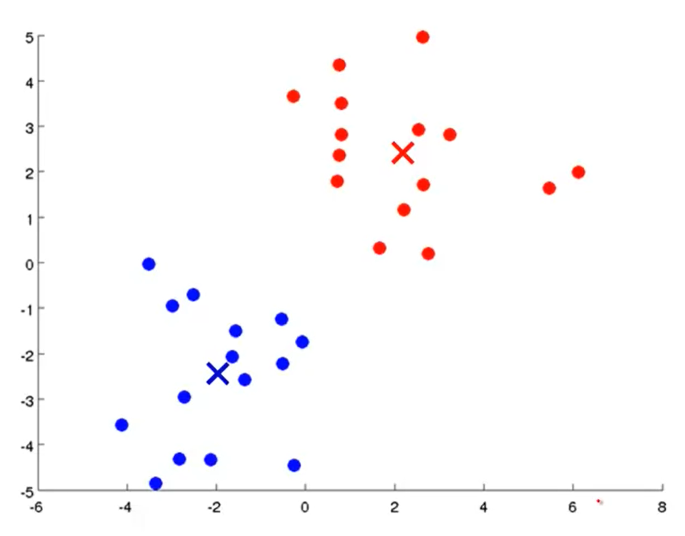Image 23: After running K-Means a few more times.
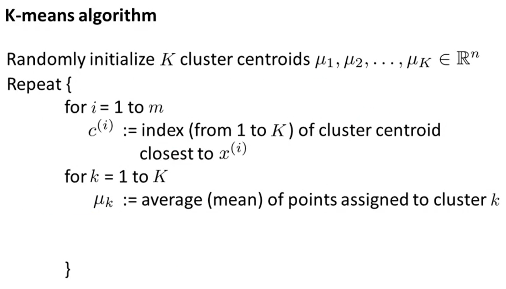Image 24: Psuedocode for K-Means algorithm.
The cost function for K-Means is simply the average distance from the centroid that each point is assigned to. Therefore, our optimisation objective is to minimise this distance.
Image 25: K-Means cost function and optimisation objective.
Movie Recommender System
One practical application of machine learning is to build recommendor systems. We see it all the time when we browse YouTube, Netflix, Amazon, Spotify etc. In this section, I will outline an algorithm that can be used to recommend movies depending on the ratings that you give various movies. Consider a dataset that has two tables with the columns being users and rows being movies; the first table tells us if a person has rated a movie or not; the second table tells us what rating is given to whichever movie. Given this dataset, we want to predict a rating that a user will give to a movie that they have not seen.
Image 26: Problem formulation for movie recommender system.
Next, suppose we also have a dataset that contains the movies as rows and a genre score on the columns. The genre score indicates how much of that genre a movie contains in the range [0,1]. In image 27, suppose we have already obtained a feature vector x3 for puppy's in love and a genre preference vector Θ1 (vector for Alice). Using these two vectors, we can calculate the expected rating that Alice would give to puppy's in love.
Image 27: Predict Alice's rating for Puppy's in Love.
So, how do we actually get our values for Θ? The cost function that we choose to minimise is similar to the one for linear regression, is it 1/2 * the sum of the errors between predicted rating and actual rating + regularisation term.
Image 28: Defining the terms that we will use in the cost functino.
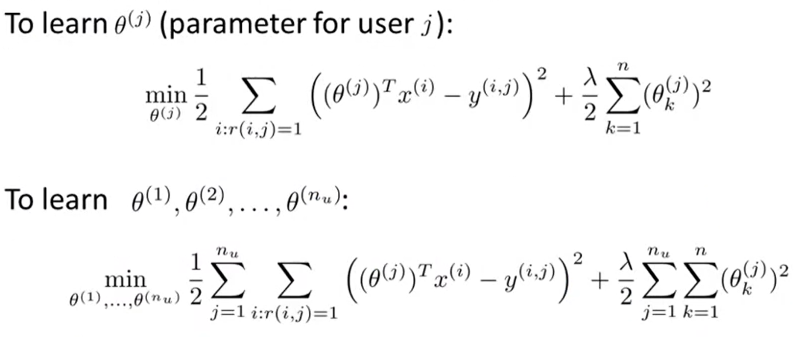Image 29: The optimisation objective for our movie recommender system.